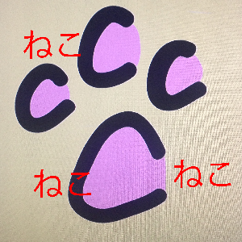
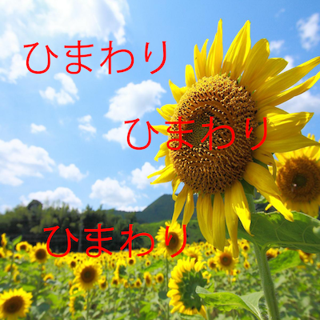
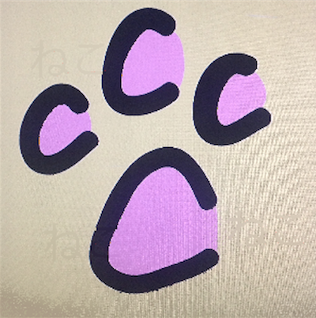
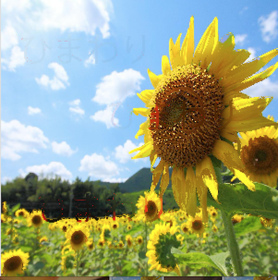
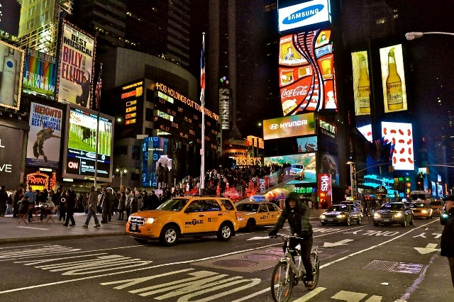
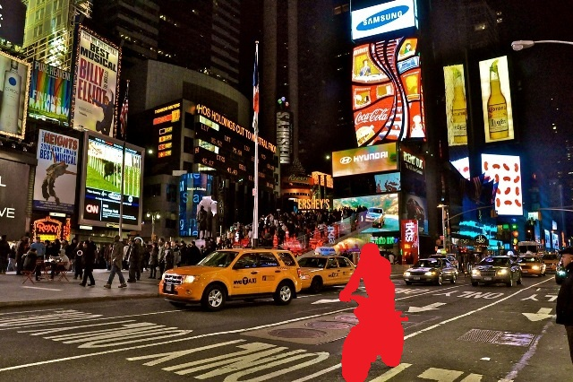
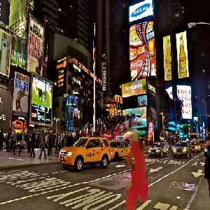
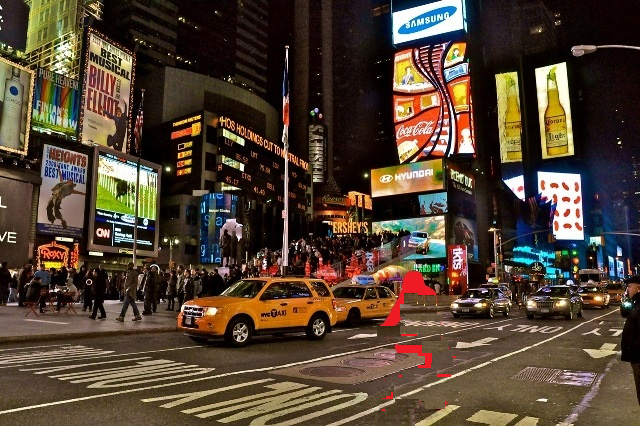
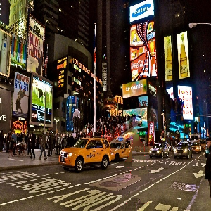

画像処理：いんぺいんてぃんぐ？
今回は大学のセミナーで少しだけ画像処理をやったので、それを紹介しようと思います.
目的は、画像内の任意のものを消す事.インペインティングと呼ばれる技術らしいです.
※総計３日ほど、取り組んだだけなので、もっといい方法があれば教えてください.
※非力なノーパソで処理したので、もう少しパワーのあるマシンで処理すれば、もっと綺麗になるかも
(処理を軽くするため、処理後はサイズがおかしく.....サイズくらい合わせればよかった)
使ったモノ
1.画像内の文字を消してみようかと思います.
消したい画像がこれです。


この画像の文字(ねこ,ひまわり)だけを消します
では、消すためのアルゴリズムを説明します
- 1. メディアンフィルターをかけます
- 2. Adaptive Bilateral Filterをかけます
- 3. 1.2を１０回ほど繰り返します
- 4. 元の画像の文字部分だけを処理した画像と入れ替えます
- 5. 1~4をいい感じに消えるまで繰り返します
ソースコード
# -*- coding:utf-8 -*-
import numpy
from PIL import Image
import random
import cv2
def deal(img):
for i in range(10):
img=cv2.medianBlur(img,3)
img=cv2.adaptiveBilateralFilter(img,(7,7),7)
return img
def redo():
ori = Image.open("ori3.png").convert("RGB")
ori=ori.resize((300,300))
oriArray = numpy.asarray(ori)
img = Image.open("10med_ad.png").convert("RGB")
img=img.resize((300,300))
imgArray = numpy.asarray(img)
maxrow=300
maxcol=300
oriArray.flags.writeable = True
imgArray.flags.writeable = True
for i in range(maxrow):
for j in range(maxcol):
if oriArray[i,j][0]>=180 and oriArray[i,j][1]<=180 and oriArray[i,j][2]<=220:
oriArray[i,j][0] = imgArray[i-1,j][0]#R
oriArray[i,j][1] = imgArray[i-1,j][1]#G
oriArray[i,j][2] = imgArray[i-1,j][2]#B
if oriArray[i,j][0]>=130 and oriArray[i,j][1]<=80 and oriArray[i,j][2]<=80:
oriArray[i,j][0] = imgArray[i-1,j][0]#R
oriArray[i,j][1] = imgArray[i-1,j][1]#G
oriArray[i,j][2] = imgArray[i-1,j][2]#B
img = Image.fromarray(numpy.uint8(oriArray)) #NumpyToPIL
img.show()
img.save('done.png', 'PNG')
def main():
img=cv2.imread("ori3.png")
img=deal(img)
img=cv2.resize(img,(800,800))
cv2.imshow('tako',img)
cv2.waitKey(0)
cv2.destroyAllWindows()
cv2.imwrite('10med_ad.png',img)
redo()
for i in range(10):
img=cv2.imread("done.png")
img=deal(img)
cv2.imwrite('10med_ad.png',img)
redo()
if __name__ == "__main__":
main()
結果がこれになります


この方法のいいところは、文字があった所にいい感じの色が補間され、Adaptive Bilateral Filterをかけたために文字周りのエッジがしっかり残る事です.
2.画像内の人を消してみようかと思います.
消したい画像はこれ

まず、消したい所を判定しやすい色で塗りつぶします

先ほどと同じ方法で処理した結果

さすがにこれほど、大きなものを消すことはできませんでした.
そこで軽く自分でパッチをあててから処理.
アルゴリズムは同じ.
パッチをあてた画像
てきとーにまわりのものをコピペしただけです

処理結果

うーん？まぁまぁ？
頭があった人混みは無理ぽ
今回は以上です